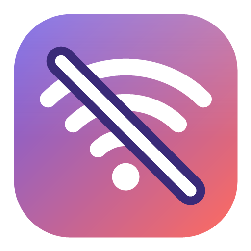

GoOffline cuts any Windows app off from the network with a single switch — without touching the rest of your PC.
Pick a program, flip it off. Flip it on. No command line, no services, no reboots.
Everything else on your PC stays online — your browser, your downloads, your Discord.
Live connections are reset immediately. Newly launched copies are blocked too.
For programs that still phone home: injects a hook that fails every network call from inside the process.
Finds Microsoft Store (UWP) apps like Spotify, not just desktop installers.
Open source under MIT. No account, no telemetry, no ads.
Pick from your installed apps or drop in any .exe.
Windows Firewall blocks the app's traffic. Open sockets get reset.
The rules disappear and the program is online again. That simple.
No. It adds a Windows Firewall rule per app. There's no background service when the app is closed.
The firewall side yes — anti-cheat can't bypass a firewall. Hard mode (DLL injection) will not load into protected games like Valorant or Fortnite; use the firewall switch alone there.
Yes, once per launch via a UAC prompt. Windows Firewall edits require it.
%AppData%\GoOffline\apps.json. Everything else lives in Windows Firewall rules named GoOffline - ….
Windows only for now. The firewall APIs it uses are Windows-specific.
It's free and always will be. If it saved you some headaches, a coffee goes a long way.